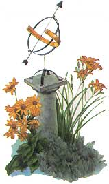

During the summer, when Mars burns orange at night, consider how few terrestrial examples we have of that warm hue. Orange is the color of some citrus fruit and pumpkins, but we rarely see it in nature north of the tropics. Among birds, only the Baltimore oriole has large patches of what could be called orange, and there are very few flowers at temperate latitudes that are truly tangerine. Among those few are the June-blooming lilies.
Day lilies (so named because its buds bloom for one day only) punctuates flowerbeds from Virginia to New Brunswick, but is not a true lily. You can tell it from the other orange lilies because its blossoms are unspotted and point up, like cups, rather than down, like bells. Unlike true lilies, the day lily has a leafless stem, with its long leaves shooting up from the base of the plant. It is sometimes mistaken for the tiger lily, another Asiatic import, but with spotted, downward-hanging blossoms.
Like roses, cultivated day lilies have been bred into an astonishing assortment of colors. Naturalist Edwin Way Teale wrote that his wife's garden contained about a hundred varieties of day lily in shades of pink, purple, chartreuse, cherry red, orange, buttercup yellow, lavender and tan. With colors like that come poetic names such as Vagabond King, Winning Ways, Prairie Moonlight, Grandfather Time, Ice Carnival, Silver King, Bold Rankin and Soft Whisper.
|
 ILLUSTRATION: LINDA HOLT AYRISS/ARTVILLE Orange day lilies are one of only a few orange plants that grows in temperate regions. |
|
|